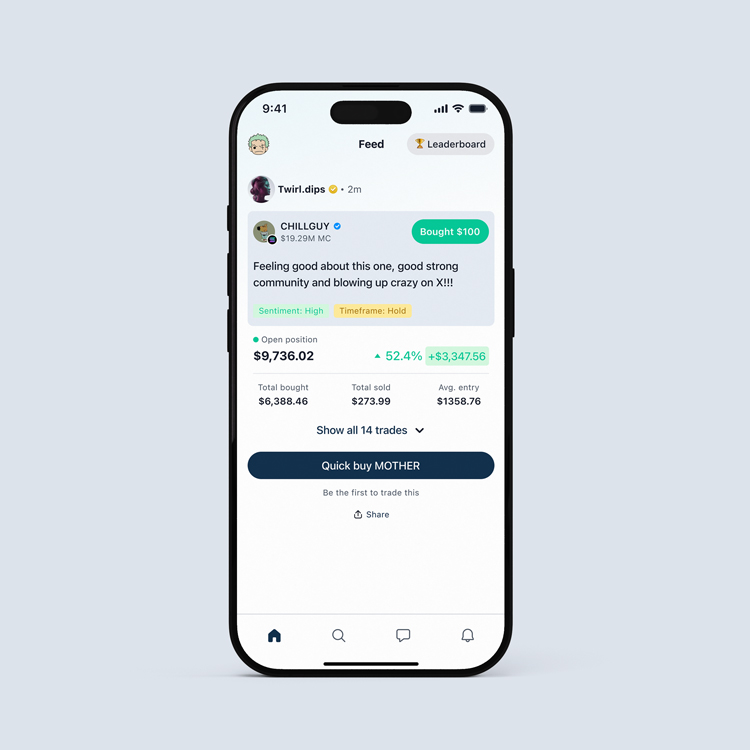
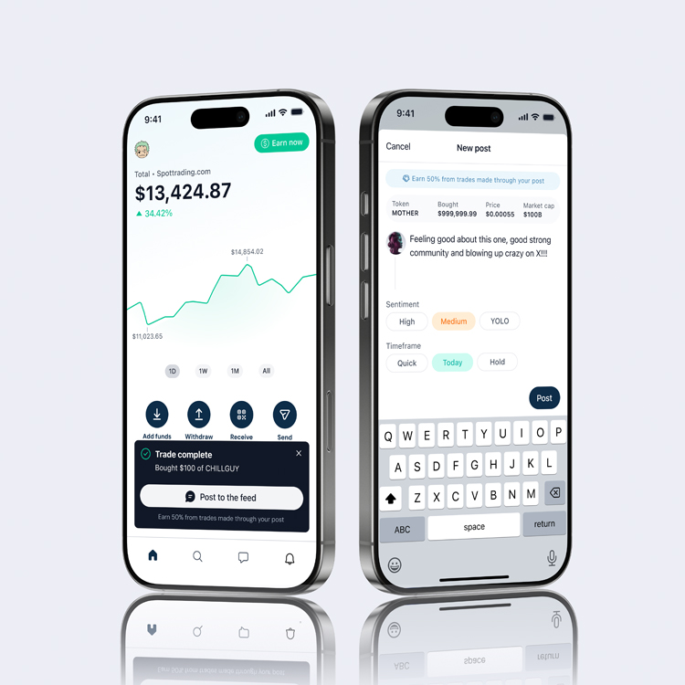
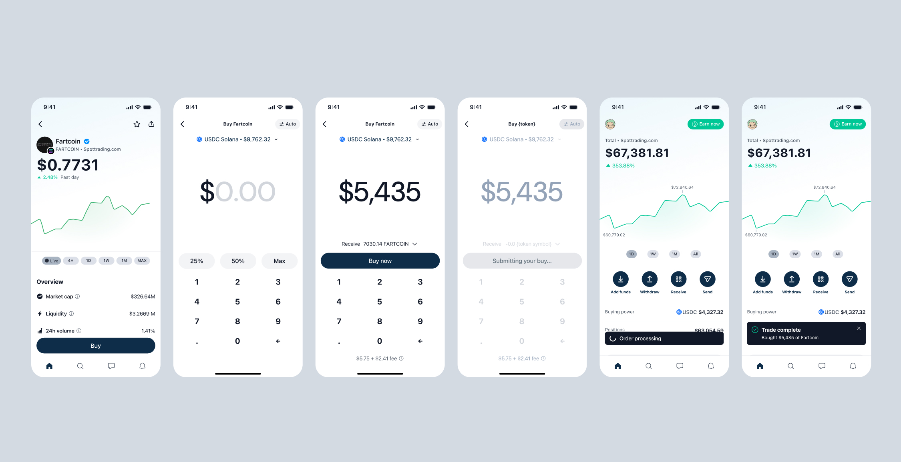
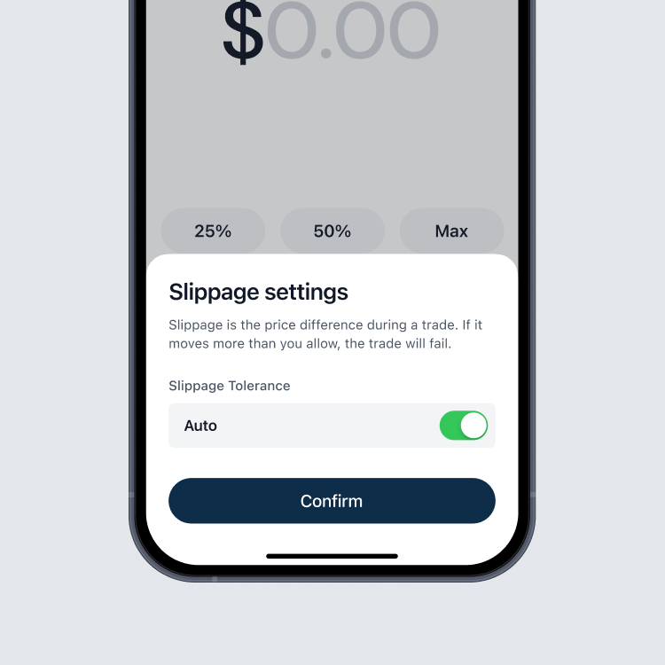
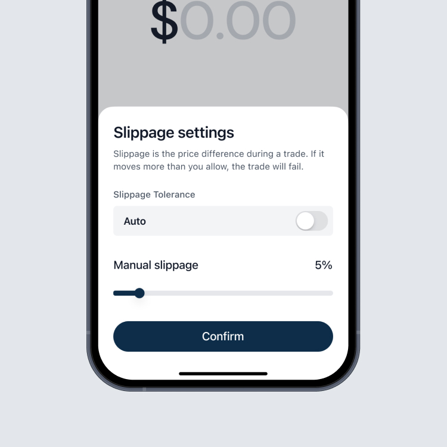
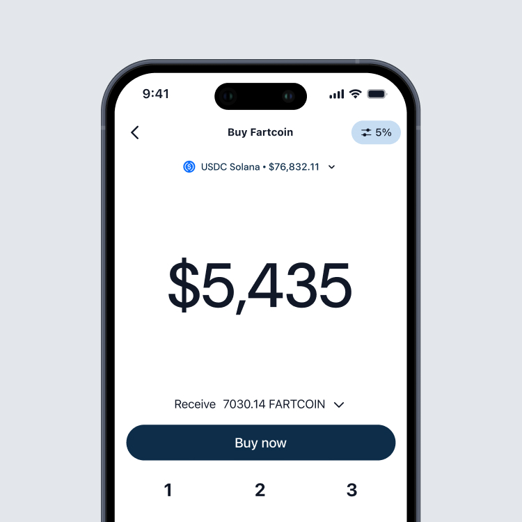
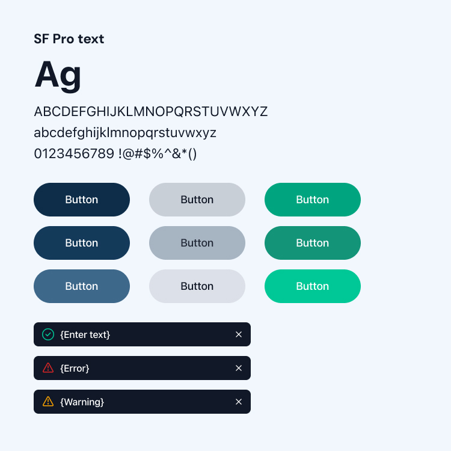

Catch the memes
before they moon.
Spot is a mobile trading app for everyday users, not just crypto natives. It combines simple trading, vetted tokens and clear context in a space that usually feels noisy and risky.
I joined as the founding designer and shaped the product from zero to launch. I worked with the founders and engineers to define core flows, rebuild the visual system on top of Radix UI and make trading feel calm and understandable in a volatile space.
Most people wanted to trade trending meme tokens but didn’t trust the platforms in front of them. Rugpulls, fake coins and noisy channels meant many users either copied others blindly or stayed out altogether.
“I always feel late. By the time I hear about a new meme coin, it’s already pumped and I’m just buying the top.”
“Half these coins look sketchy. I want to buy early but I don’t want to get rugged again.”
“When a coin starts moving, my trades just fail nonstop. I honestly don’t know what’s happening or if it’s me.”
“Everyone on Twitter screams about random coins, but no one explains why they’re moving. I’m basically guessing.”
Project highlights


Showing why people trade, not just what they trade
The feed shows real trading activity with short theses, giving users simple context without noise. Designed to surface clear signals, not create a social network or overwhelm new traders.

A calm trading panel for a volatile market
A clean, predictable trading panel built for volatile markets. Clear hierarchy, honest states and simple confirmations minimise confusion when prices move fast or networks slow down.

Initial state

Slippage slider

Active manual sippage

A design language built on Radix UI
A custom visual system built on Radix UI. Tokens, spacing rules and component states created a consistent, mobile-first identity across iOS and Android while staying fast for engineers to implement.
What shipped
Spot launched with a full mobile experience: feed, theses, trading, slippage warnings and a branded design language on top of Radix UI. Early cohorts used it as a cleaner, more trustworthy way to trade meme coins in one place.
What I’d push further next time
I’d tighten analytics loops around trading and thesis behaviour, and invest more in polishing the trade and risk UI as the system matured — keeping trading calm, honest and simple in a space that usually isn’t.